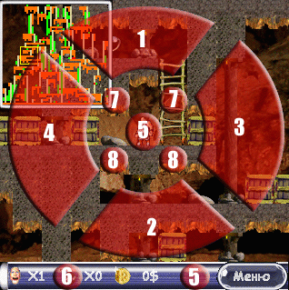

|
|
Содержание:Лицензия--Авторские права. Все права собственности и авторские права на компьютерную игру "naPalm Runner" (далее по тексту "программа"), вспомогательные файлы и любые копии программы принадлежат ее автору Александру Семенову (далее по тексту "автор"). Все права на программу защищены законами и международными соглашениями об авторских правах, а также другими законами и договорами, регулирующими отношения авторского права. Запрещается дизассемблировать, декомпилировать или изменять программу. -- Условия распространения Программа распространяется по принципу "как есть". при этом не предусматривается никаких гарантий, явных или подразумеваемых. Вы используете программу на свой собственный риск. Автор не несет ответственности за потери данных, повреждения, потери прибыли или любые другие виды потерь, связанные с использованием (правильным или неправильным) этой программы. Программа распространяется как shareware-продукт, то есть Вы имеете право передавать копии программы любому лицу, тиражировать ее на CD-ROM, дискетах, распространять ее через интернет, BBS или используя другие способы, при условии, что дистрибутив программы не модифицирован. -- Установка и использование программы свидетельствует о вашем согласии с условиями данной лицензии. Если вы не согласны с условиями данной лицензии, то должны удалить программу со своих устройств хранения информации и отказаться от ее дальнейшего использования. В программе использован исходный код Xiph.org: libogg и libvorbis. Все права на данный код принадлежат Xiph.org ИграОб игре:naPalm Runner представляет собой смесь идей популярных аркадных игр (немного Lode Runner, немного Bomber Man, немного Sokoban) с качественной графикой и анимацией, музыкой и звуком; с бесконечным количеством лабиринтов различного размера и сложности. Чтобы перейти на следующий уровень вам нужно будет собрать ВСЕ артефакты и открыть дверь. В этом вам будут мешать монстры, которые охотятся на игрока (и заодно прикарманивают все ценные вещи), баррикады из ящиков а так же запутанность лабиринта. В лабиринте вы найдете разного рода полезные предметы: бомбы (для взрыва преград, уничтожения монстров), кирку (для создания непроходимых завалов), заморозку (замораживает, но на короткое время) и капкан (не попадайтесь в него сами ;)). Вы также можете выкапывать небольшие ямы-ловушки для монстров, либо подкапывать землю под ящиками. Игра поддерживает экраны различного размера и ориентации (с поворотом налево и направо), управление пером или кнопками, встроенный редактор карт и возможность добавлять новые ресурсы. Системные требованияВерсия для Palm OS:
Версия для Windows (9x, XP):
УстановкаВерсия для PalmOS:
Важно:
Версия для Windows Mobile 2003:
Версия для Windows:
УправлениеВ игре возможно управление как кнопками так и стилом (мышью).
Перед игрой вам потребуется назначить соответствие кнопок различным действиям (даже если вы собираетесь играть только стилом).  Соответствие виртуальных экранных кнопок (по рисунку):
РедакторДля предварительного создания уровня можно использовать генератор карт. Со следующими параметрами:
Для быстрого изменения числовых значений, нажмите на нужное число. Перемещая стило влево - вправо по экрану вы будете изменять его значение в пределах допустимого диапазона. Разработчики naPalm Runner: |